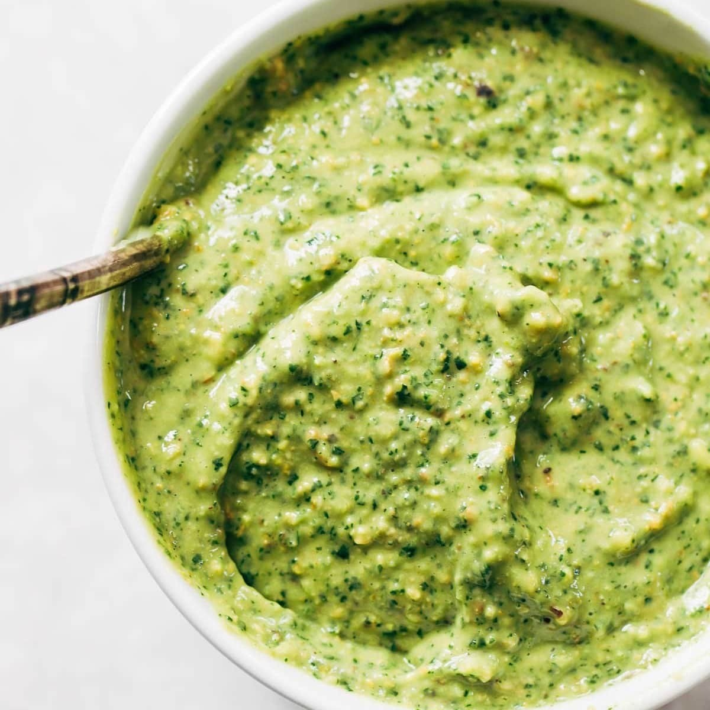

Green Sauce
Ingredients
• Wilted salad greens Onions Water Salt and pepper to taste
Directions
1. Collect discarded salad greens from around your kitchen.
2. Several suggestions are excess kale, romaine, spinach and parsley leaves
3. Sauté with onions in water
4. Add to pasta dishes, bonus points if the grains are recycled
